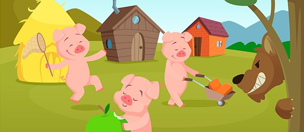

Cuentos
Los Tres Cerditos
Había una vez tres cerditos que vivían al aire libre cerca del bosque. A menudo se sentían inquietos porque por allí solía pasar un lobo malvado y peligroso que amenazaba con comérselos. Un día se pusieron de acuerdo en que lo más prudente era que cada uno construyera una casa para estar más protegidos.
LeerUltimos Cuentos
Caperucita Roja
Érase una vez una preciosa niña que siempre llevaba una capa roja con capucha para protegerse del frío. Por eso, todo el mundo la llamaba Caperucita Roja. Caperucita vivía en una casita cerca del bosque. Un día, la mamá de Caperucita le dijo: – Hija mía, tu abuelita está enferma. He preparado una cestita con tortas y un tarrito...
LeerPinocho
Había una vez un carpintero llamado Maestro Cereza, era el artesano más anciano de la región y sus arrugadas manos eran capaces de hacer auténticas obras de arte con la madera. Pese a su avanzada edad, todos los días el Maestro Cereza subía a lo alto del monte a talar la madera que necesitaba para hacer sus trabajos...
LeerBlancanieves
En un país muy lejano vivía hace muchos años una pequeña princesa, una niña muy bonita que tenía el cabello negro como el azabache, las mejillas de un rojo como la sangre y el cutis tan blanco como la nieve, por lo que todo el mundo la conocía como Blancanieves.Tenía una madrastra que era una mujer bella, pero tan orgullosa y arrogante...
LeerEl Patito Feo
Era una preciosa mañana de verano en el estanque. Todos los animales que allí vivían se sentían felices bajo el cálido sol, en especial una pata que de un momento a otro, esperaba que sus patitos vinieran al mundo. – ¡Hace un día maravilloso!– pensaba la pata mientras reposaba sobre los huevos para darles calor-...
LeerLa Cenicienta
Hace muchos años, en un lejano país, había una preciosa muchacha de ojos verdes y rubia melena. Además de bella, era una joven tierna que trataba a todo el mundo con amabilidad y siempre tenía una sonrisa en los labios. Vivía con su madrastra, una mujer déspota y mandona que tenía dos hijas tan engreídas...
Leer
Bambi
El primer día de la primavera fue muy especial en el bosque porque coincidió con el nacimiento de un nuevo miembro de la comunidad. Todos los animales como la ardilla, el ratoncito, el conejo, la comadreja y los pájaros fueron a dar la bienvenida a Bambi, el tierno cervatillo recién nacido. Era muy simpático, apenas...
Leer